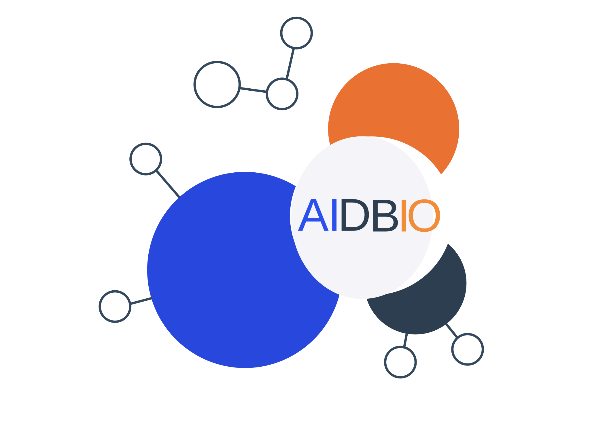

Machine Learning & Predictive Modeling
Supervised learning, model selection, validation, and interpretation for field, laboratory, and translational settings. Built with strong attention to data quality, honest evaluation, and downstream usability.

AidBio builds rigorous data pipelines, predictive machine-learning systems, and agentic AI workflows for agritech, biotech, and applied R&D teams that need signal, speed, and scientific credibility.
AidBio bridges deep biological domain knowledge with modern AI and data-engineering practice, producing systems that are useful to scientists, not just impressive in demos.
Supervised learning, model selection, validation, and interpretation for field, laboratory, and translational settings. Built with strong attention to data quality, honest evaluation, and downstream usability.
Domain-aware assistants, structured reporting flows, retrieval pipelines, and lightweight automation that augment small scientific teams without creating infrastructure sprawl.
Crop-linked and geospatial analytics for field trials, yield-oriented investigation, environmental signal extraction, and weather-aware modeling.
Support for multi-omics interpretation, biomarker-oriented workflows, experimental data consolidation, and reproducible analysis architecture tailored to research realities.
Engagements are scoped tightly so teams spend time on science and decisions instead of deciphering vague software deliverables.
Clarify the business question, scientific constraints, dataset realities, and decision context before implementation starts.
Standardize, clean, audit, and explore the data to isolate signal from experimental and operational noise.
Develop reproducible, maintainable pipelines for prediction, interpretation, or structured automation.
Deliver documented code, practical outputs, and a hand-off your internal team can actually own.
AidBio is led by Cleverson Matiolli, PhD — a quantitative biologist and machine-learning practitioner with experience spanning academic research, applied R&D, and computational problem-solving across life sciences and agritech.
The operating philosophy is straightforward: honest modeling, reproducible architecture, and deliverables that remain useful after the presentation ends.
AidBio engages through well-scoped projects designed to move from messy data to clear operational or scientific decisions.
contact@aidbio.com